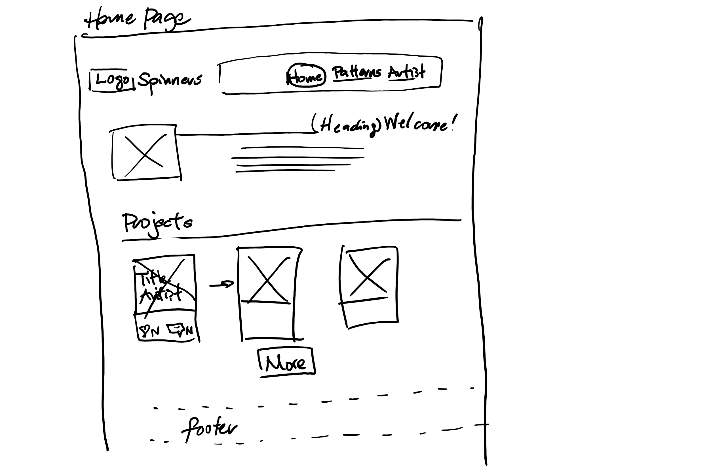
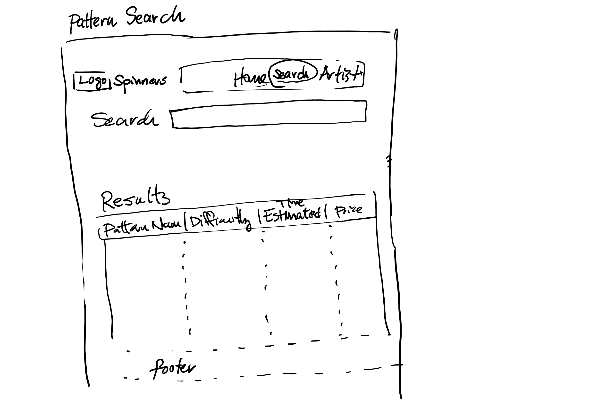
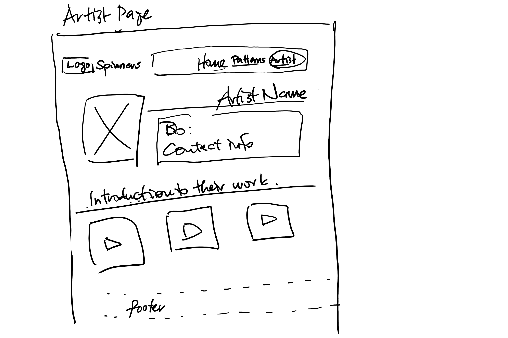
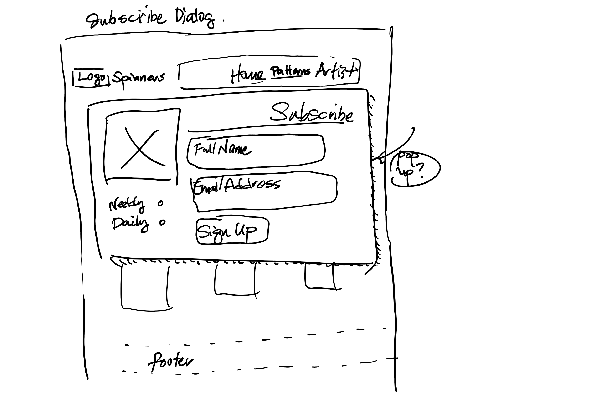

Overview
Purpose
It's a site for custom yarn products and the projects you can make with them. You will browse colorful, exclusive, hand-made scarves and blankets, along with knitting and spinning advice. The knitting projects will be emphasized, as they fuel the demand for knitting supplies. Each project will have a description, detailed pattern, and instructional video. The site can expand to include consignment sales, knitter's corner forum, or newsletter as time allows.
Audience
The site caters to the "yarn artist," the people who are devoted to making yarn creations that inspire and who want to share their creations and their know-how with the world.
- Anyone who knits, crochets, makes yarn, or makes things with yarn
- Anyone who would like to learn about this age-old craft
Branding
Website Logo
The image is a whimsical breaking of the spinners logo across two halves of a knitting project.
Style Guide
Color Palette
At first, I envisioned a vibrant color pallette with six colors; however, subsequent tests show that the website looks better with clean, but subdued colors, which allow the knitting projects to add additional color to the site.
| Primary | Secondary | Accent 1 | Accent 2 |
|---|---|---|---|
| hsla(200, 73%, 28%, 1) | white | hsla(26, 35%, 27%, 1) | hsla(24, 31%, 58%, 1) |
Typography
Heading Font: Gochi Hand
A hand-written look gives this font its friendly demeanor.
Paragraph Font: Poppins
This font is easy to read and complements the heading font well.
Normal paragraph example
The best Whitewater Rafting in Colorado, White Water Rafting Company offers rafting on the Colorado and Roaring Fork Rivers in Glenwood Springs. Since 1974, we have been family owned and operated, rafting the Shoshone section of Glenwood Canyon and beyond.
Colored paragraph example
Trips vary from mild and great for families, to trips exclusively for physically fit and experienced rafters. No matter what type of river adventures you are seeking, White Water Rafting Company can make it happen for you.
Navigation
Site Map
- Index page: Containing introductory text and a gallery of projects. Putting these on the home page makes them easy to find.
- Search Pattern Library: A collection of searchable projects.
- Artist Spotlight: A page for local yarn artist and their work.
- Newsletter subscription: A place to sign up for alerts when new projects are posted.
Wireframes



